🔧 Outils
Pour mes projets de développement web, j'utilise une variété d'outils et de technologies qui me permettent de créer des applications modernes, réactives et performantes. Voici un aperçu des outils que j'utilise régulièrement :
- Git & GitHub : Gestion des versions et collaboration sur des projets.
- Visual Studio Code : Mon éditeur de code quotidien avec de nombreuses extensions.
- MongoDB : Gestion des bases de données pour stocker les informations des utilisateurs.
- Postman : Pour tester les API de mes applications.
- Pack Office : Pour rédiger tout mes documents de manière professionnelle et organisé
- Trello : Pour organiser mes tâches et projets de manière visuelle et collaborative.
- Docker : Pour la conteneurisation des applications, garantissant un déploiement cohérent et rapide sur différents environnements.
- Figma : Pour la création de designs d'interface utilisateur et de prototypes interactifs de manière collaborative.
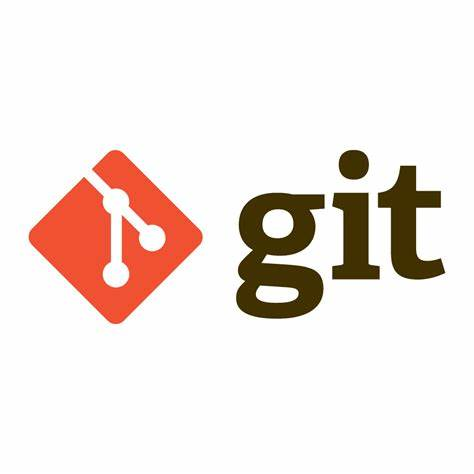

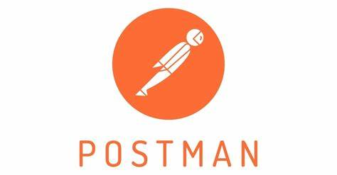
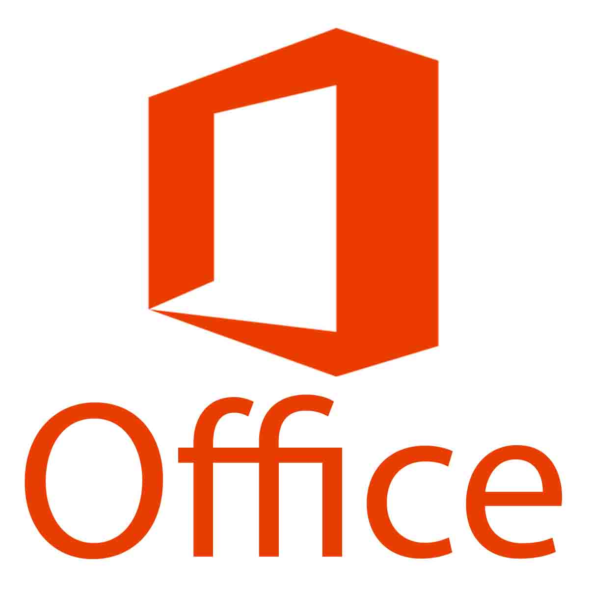
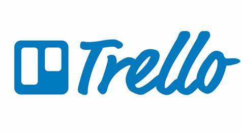

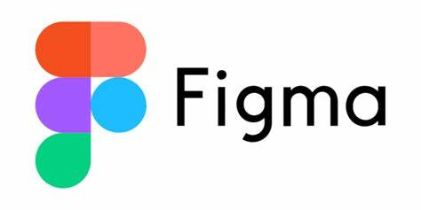
🎯 Mes autres compétences
Lors de ma formation j'ai eu l'occasion d'apprendre plusieurs autre choses qui contribue essentiellement à ma vie professionnelle :
- Travail en équipe: J'ai appris à collaborer efficacement au sein d'une équipe, à partager des idées et à résoudre ensemble des défis techniques. La communication et la répartition des tâches sont essentielles pour le bon déroulement des projets.
- Travail avec la méthode Agile Scrum: Grâce à cette méthode, j'ai appris à être plus réactif et adaptable face aux changements, tout en maintenant une structure rigoureuse. Travailler en sprints m'a permis de livrer des résultats rapidement et de manière continue.

 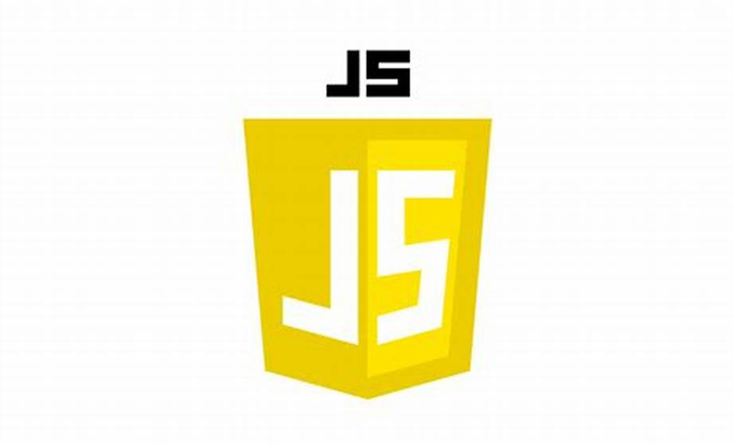
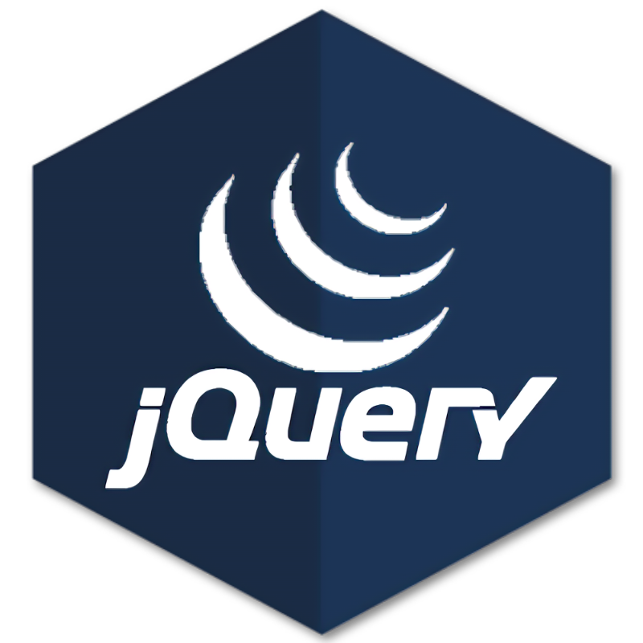
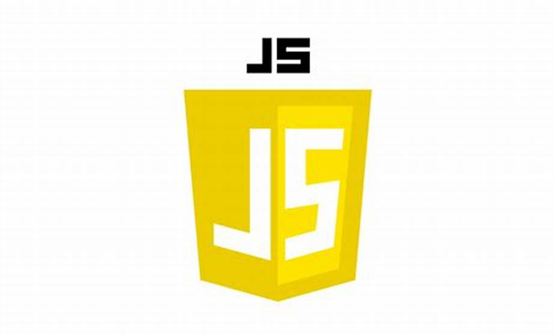
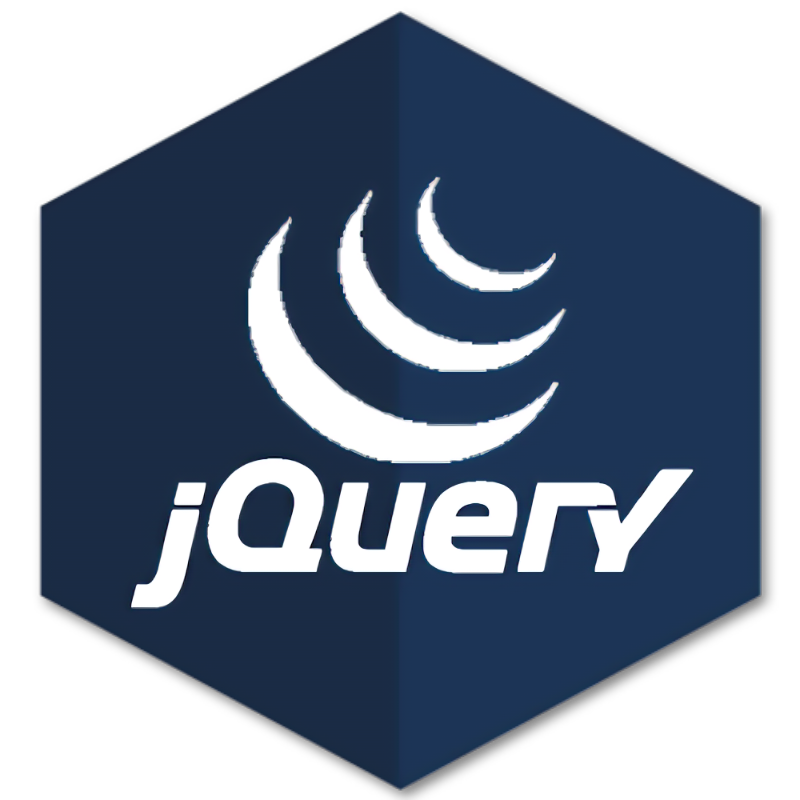
 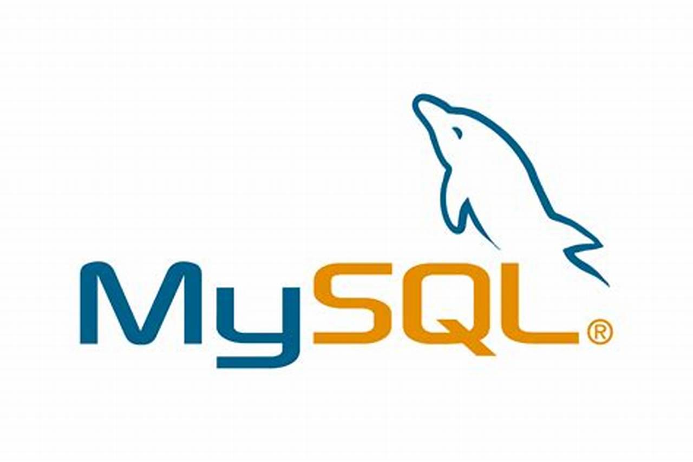
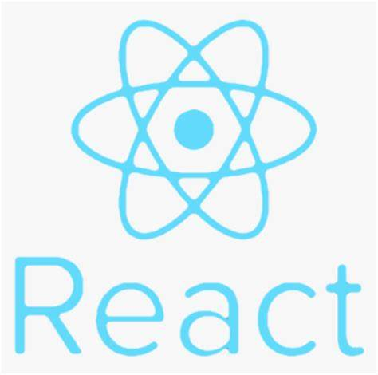
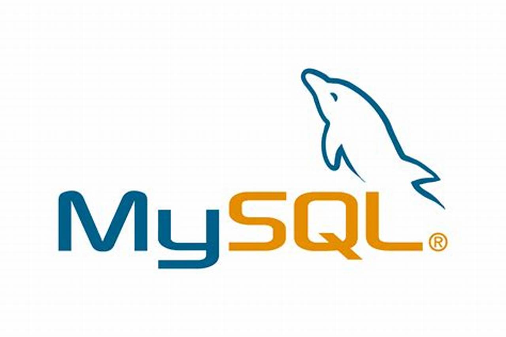
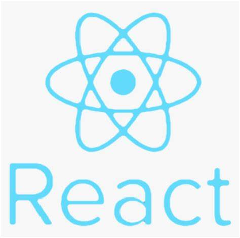
 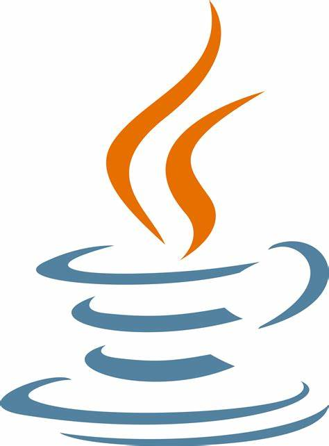
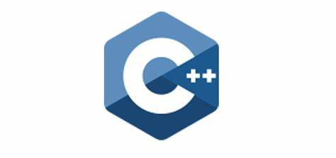
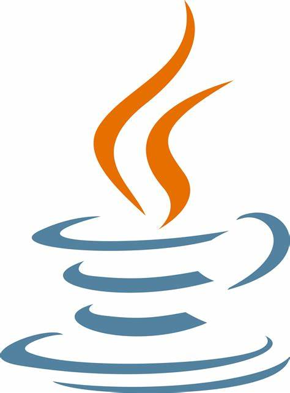
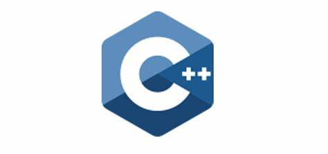